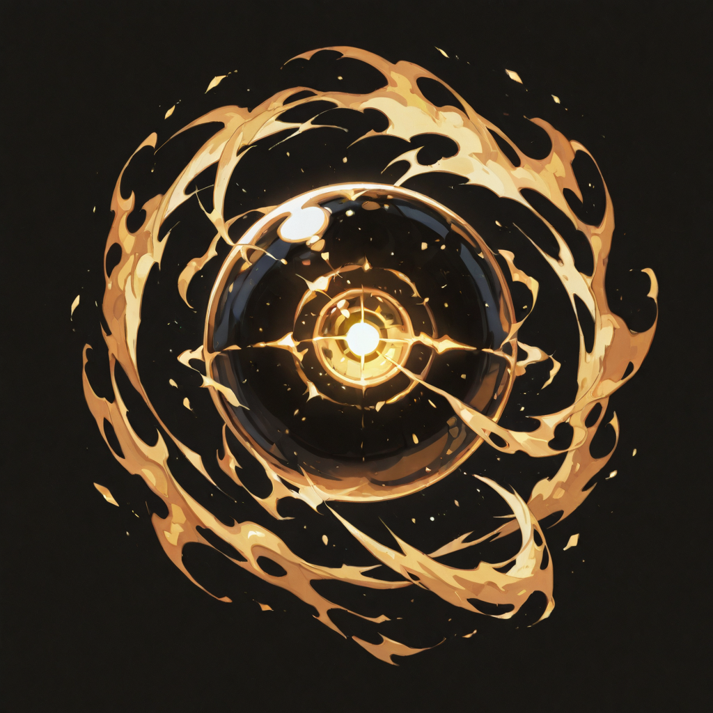
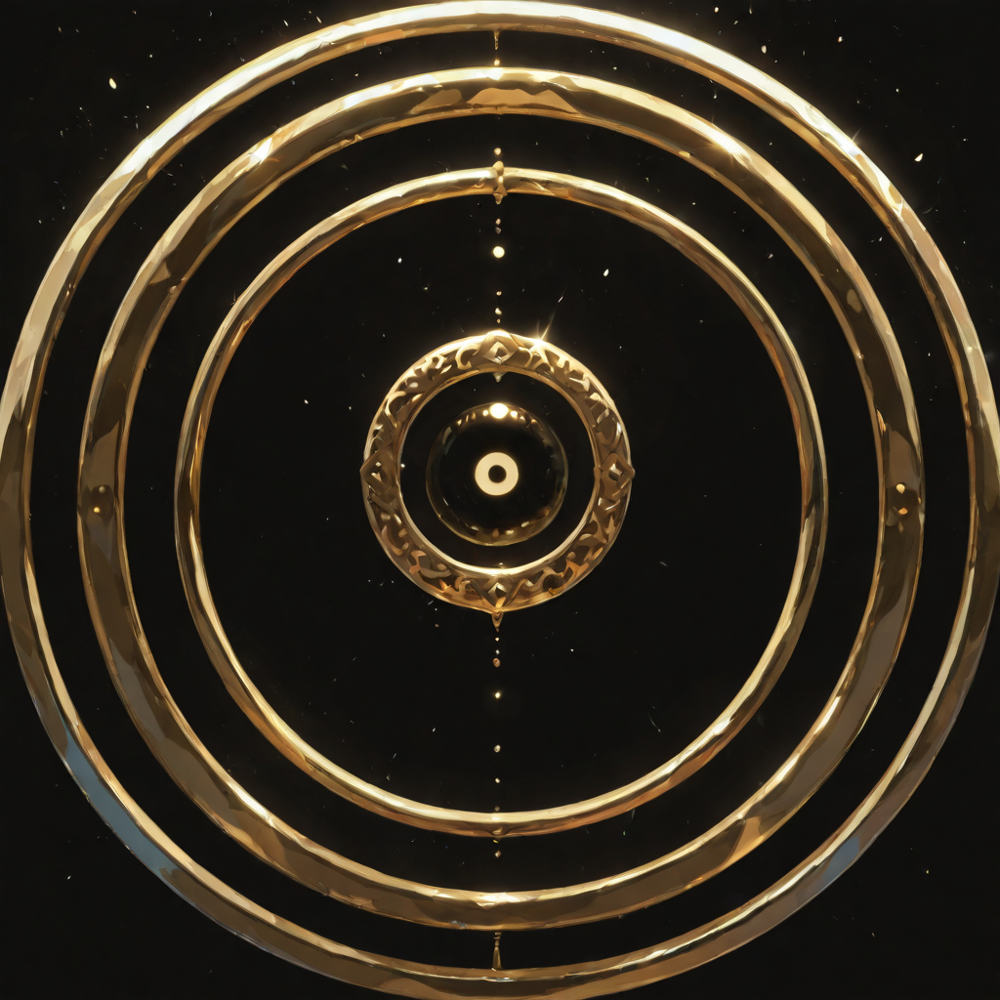
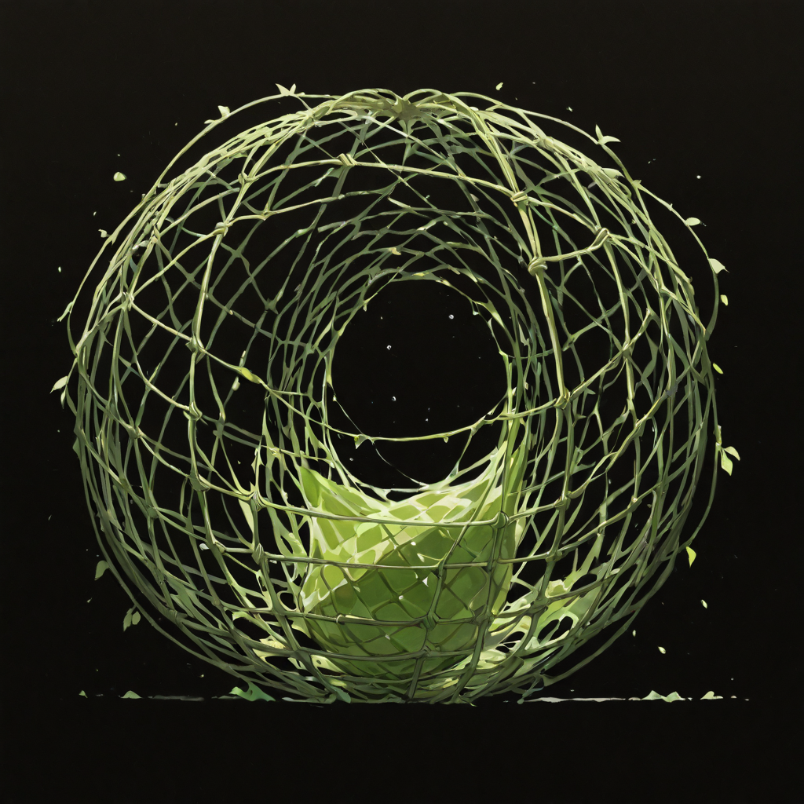

What the Forest Records
The forests do not forget. The Empire's forests least of all , they are Malicott's original domain, places where the sap remembers every wound and every healing, where the root systems carry information older than the settlements built above them. The Eye of the Forest is not a title she chose. It is a function she fulfills: the forest needed an instrument for its observation, and she is what was available and willing.
She died doing what she had done her whole life , watching. She was a forest warden, a protector of boundaries, someone who spent decades at the observation points of the old empire knowing where every disturbance originated before it had produced consequences visible to anyone else. She was very good at this. She is extraordinarily good at this in death, because in undeath the forest's own vision layers on top of hers, and what she sees through both sets of eyes simultaneously is something closer to the total picture than any living creature normally accesses.
She does not describe this as power. She describes it as clarity. The battlefield, from where she stands, has no hidden positions. There are no invisible units, no obscured lines of sight, no strategic ambiguities. There is only what is there , and the vast majority of what is there can be reached from where she stands, at range, with absolute precision.
Tactical Data

Predator's Vision
Base Skill
Total Surveillance
Active Skill
Hunting Net
PassiveForest Verdict
UltimateGallery